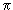

| А потом, при совершенно безнадежном
положении дел, пытаются найти запоздалое
средство помощи в превратной и суетной тонкости
рассуждений, но это нискольно не улучшает
положения и не устраняет заблуждений''. Фрэнсис Бэкон |
Совершенно революционной явилась
модель кварков. Гелл-Манн
и Цвейг в 1964
предположили, что существуют некоторые
прачастицы, преобразующиеся по спинорному
представлению размерности 3 группы SU(3) (и,
соответственно, антипрачастицы, преобразующиеся
по сопряженному спинорному представлению той же
размерности ), а из них, в свою очередь, построены
все остальные адроны. Они должны быть фермионами
(иначе не образовать реальных фермионов), и пусть
это будут фермионы c JP = 1/2+ qα,
α
= 1, 2, 3, q1 = u, q2 = d, q3 = s. Отметим, что
из-за того, что для построения бариона со спином
1/2 необходимы по крайней мере три кварка со
спином 1/2 , электрический, а также барионный
заряды у кварков оказываются дробными, что 40 лет
назад представлялось откровенно нереальным, а
для многих - даже неприемлемым.
Квантовые числа кварков при этом
должны были быть следующими:
| Q | I | I3 | Y=S+B | B | |
| u | 2/3 | Ѕ | 1/3 | 1/3 | 1/3 |
| d | -1/3 | Ѕ | -1/2 | 1/3 | 1/3 |
| s | -1/3 | 0 | 0 | -2/3 | 1/3 |
чтобы обеспечить правильные квантовые числа
всех 8 известных барионов (2.1):
p(uud), n(ddu), Σ+(uus),
Σ0(uds),
Σ-(dds),
Λ(uds), Ξ-(ssu),
Ξ0(ssd). Подробнее вопрос о
барионах мы обсудим, по соображениям
непрерывности изложения, несколько позже в
отдельной главе.
Сначала мы рассмотрим мезонные
состояния. Из кварка и антикварка можно
попытаться образовать мезонные состояния в
полной аналогии с предыдущими рассуждениями о
нуклон-антинуклонных состояниях и формулами (2.18, 2.19):
, |
(2.22) |
где
,
,
.
Мы видим, что полученную бесследную матрицу можно отождествить с октетом мезонов JP = 0- (S-состояние), при этом кварковое содержание мезонов оказывается следующим:
-
= (d), + = (u ), 0 = (u- d
), 0 = (u- d ), K-=
(s), K+ = (
), K-=
(s), K+ = ( u), K0= (
u), K0= ( s), K0= (s
s), K0= (s ),
),
 .
.
Аналогично строится и нонет векторных мезонов (2.26). При этом, поскольку их 9, то и возьмем непосредственно первое выражение в (2.22) с полным моментом J = 1:
2.23 |
Тогда сразу видно особенное строение φ-мезона - он состоит только из странных кварков!!! Cразу стало возможным объяснить более чем странный характер его каналов распада. Действительно, в отличие от ω-мезона с основной модой распада на 3 пиона, φ-мезон практически не распадается по этому каналу, (2.5 + 09)% , хотя энергетически он очень выгоден, и, напротив, охотно распадается на пару каон-антикаон: (49.1 + 0,9) % на пару K+K- и (34.3 + 0,7) % на пару. Этот экспериментальный факт сразу становится понятным, если мы построим кварковые диаграммы на простейшем уровне:
Вот мы и убедились, что замечание
Окубо не только
забавное, но и глубокое.
Итак, вроде бы экспериментальные
данные по мезонам указывают на то, что существует
три кварка.
А можно ли оценить эффективные массы
кварков? Предоположим, что  -мезон состоит точно из двух странных
кварков, так что
-мезон состоит точно из двух странных
кварков, так что  (1020))/2510 МэВ.
(1020))/2510 МэВ.
M(p)(uu,d) = M(n)(dd,u) = 930 МэВ (~940)
экс.
M(Σ)(qq,s) = 1130 МэВ
(~1192) экс.
M(Λ)(uds) = 1130
МэВ (~1115) экс.
M(Ξ)(ss,q) =1330 МэВ (~1320)
экс.
(Есть еще один радикальный вопрос: А существуют ли кварки реально? С самого начала этот вопрос был предметом оживленных дискуссий и экспериментальных поисков. Сам Гелл-Манн вначале склонялся к мысли, что это только некоторые удобные для физики частиц математические объекты. В настоящее время полагают, что кварки не менее реальны остальных элементарных частиц. Подробнее мы на этом остановимся в следующих главах.)